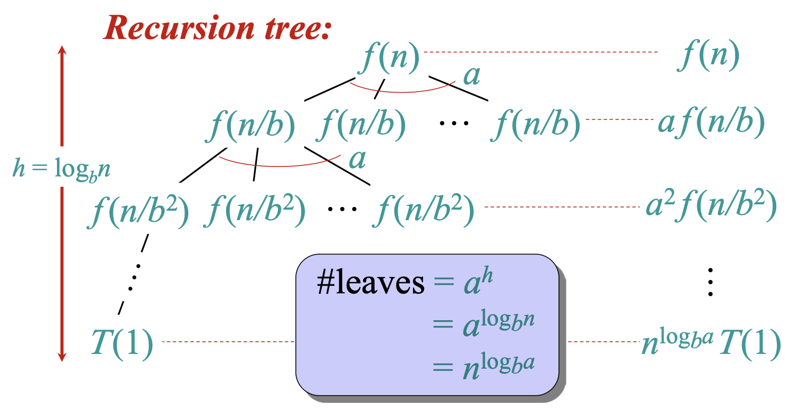
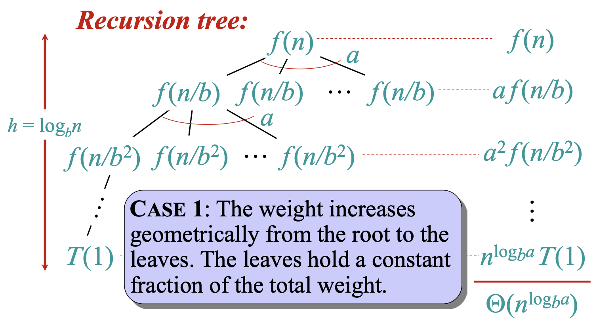
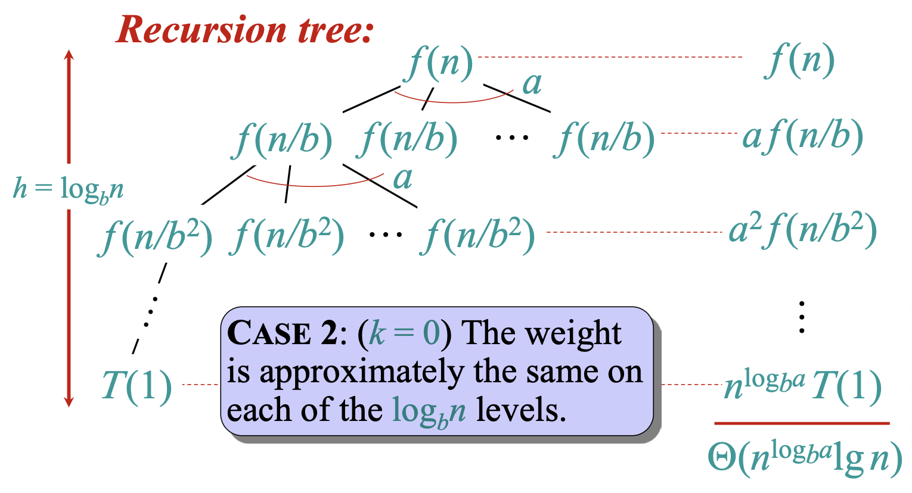

lecture #5
This is a more formal method that uses mathematical induction to prove a hypothesized bound.
The steps are:
Let's solve $T(n) = 4T(n/2) + n$.
From the previous exercise, we might guess the solution is $\Theta(n^2)$. Let's try to prove the upper bound, $T(n) = O(n^2)$.
Inductive Hypothesis: Assume $T(k) \le ck^2$ for all $k < n$.
We must now show that this implies $T(n) \le cn^2$.
Substitute the inductive hypothesis:
$$ \le 4(c(n/2)^2) + n $$ $$ = 4c(n^2/4) + n $$ $$ = cn^2 + n $$Our proof resulted in $T(n) \le cn^2 + n$.
We needed to show $T(n) \le cn^2$. Since $n$ is positive, $cn^2 + n$ is not less than or equal to $cn^2$. The induction fails.
This doesn't mean our guess is wrong; it means our inductive hypothesis isn't strong enough.
To make the proof work, we can strengthen the hypothesis by subtracting a lower-order term.
New Inductive Hypothesis: Assume $T(k) \le c_1k^2 - c_2k$ for $k < n$.
We want this to be $\le c_1n^2 - c_2n$. This holds if $c_2n - n \ge 0$, which is true for any $c_2 \ge 1$.
The proof now works! We can find constants $c_1, c_2$ that satisfy the induction and base cases.
The Master Theorem provides a "cookbook" for solving recurrences of a specific form, common in divide-and-conquer algorithms.
It applies to recurrences of the form:
$$ T(n) = aT(n/b) + f(n) $$where $a \ge 1$, $b > 1$, and $f(n)$ is an asymptotically positive function.
The theorem compares the function $f(n)$ to $n^{\log_b a}$. There are three cases:
The solution is determined by which of these "forces" dominates: the cost of the recursive calls or the cost of the work done at each step.
If $f(n) = O(n^{\log_b a - \epsilon})$ for some constant $\epsilon > 0$.
This means $f(n)$ grows polynomially slower than $n^{\log_b a}$.
Solution: $T(n) = \Theta(n^{\log_b a})$
The cost of the subproblems at the leaves of the recursion tree dominates.
If $f(n) = \Theta(n^{\log_b a} \log^k n)$ for some constant $k \ge 0$.
This means $f(n)$ and $n^{\log_b a}$ have similar growth rates.
Solution: $T(n) = \Theta(n^{\log_b a} \log^{k+1} n)$
The cost is distributed evenly across the levels of the tree.
If $f(n) = \Omega(n^{\log_b a + \epsilon})$ for some constant $\epsilon > 0$, AND if $af(n/b) \le cf(n)$ for some constant $c < 1$ and sufficiently large $n$ (the "regularity condition").
This means $f(n)$ grows polynomially faster than $n^{\log_b a}$.
Solution: $T(n) = \Theta(f(n))$
The cost of the work at the root of the recursion tree dominates.
Let's solve some recurrences.
1. $T(n) = 4T(n/2) + n$
2. $T(n) = 4T(n/2) + n^2$
3. $T(n) = 4T(n/2) + n^3$
The standard Master Theorem does not cover every recurrence.
Example: $T(n)=4T(n/2)+\tfrac{n^2}{\log n}$
Depth of the tree $\approx \log n$ (since subproblem size halves each level).
Total work across all levels:
$$\sum_{i=0}^{\log n - 1} \frac{n^2}{\log n - i} = n^2 \sum_{j=1}^{\log n} \frac{1}{j} = \Theta\!\big(n^2 \log\log n\big).$$
The dominant cost comes from summing the internal levels:
$T(n) = \Theta(n^2 \log\log n)$
✔ Standard Master Theorem fails, but recursion tree analysis resolves it.
The master theorem itself comes from the recursion tree analysis.


